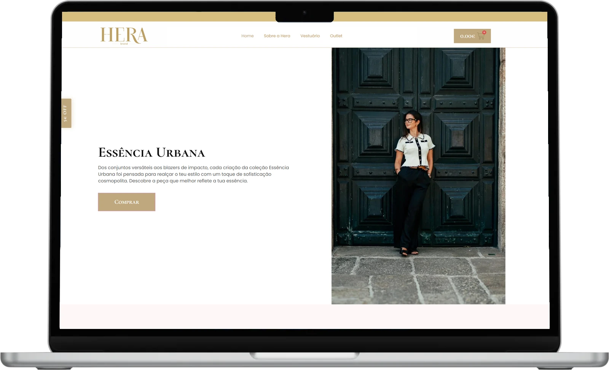

( Projeto )
Hera Brand
Loja virtual de moda feminina · Portugal

O desafio
A Hera Brand é uma marca de moda feminina de Portugal. A loja virtual precisava mostrar as coleções com o cuidado da marca e levar a cliente até a compra.
Numa loja de moda, o que mais derruba a venda costuma não ser a vitrine: é o número de passos entre o “quero” e o “comprei”.
A solução
Fizemos a loja do design ao lançamento. A regra que guiou cada tela foi tirar passos do caminho entre ver a peça e concluir a compra.
O cliente está em Portugal; o projeto foi feito do Rio de Janeiro, inteiro a distância.
Avaliação no Google
Já contei com a BUMAVIT para o desenvolvimento de alguns projetos. Excelentes profissionais. Continuo recorrendo a eles sempre que preciso de qualquer serviço na parte de Web.